Sample Screenshots of Dreamweaver: The Legend of Fun Kdungon
This appendix presents sample player inputs and their corresponding screen outputs for Dreamweaver: The Legend of Fun Kdungon. Each item shows the player action (Input), the resulting game screen (Output), and a captured screenshot from the build.
Input: The player opens the installed Dreamweaver application. Action: Enters a registered email or username and password, then selects Login.
Output: The Login screen displays the Dreamweaver title art with fields for account credentials and options to sign in or create a new account.
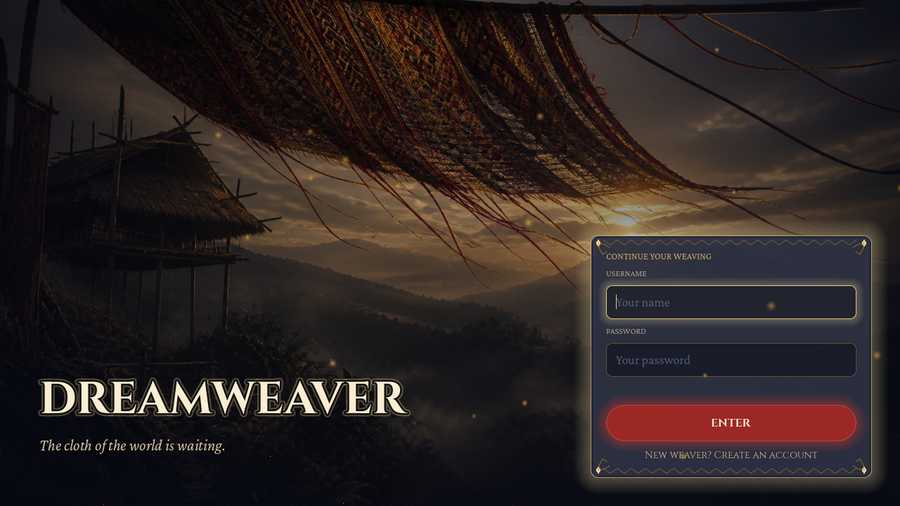
Input: A new player opens the Register screen. Action: Enters account details and confirms registration.
Output: The registration form is submitted. Successful registration allows the player to sign in and continue to the Gateway (Main Menu). Validation messages guide the player if required fields are incomplete.
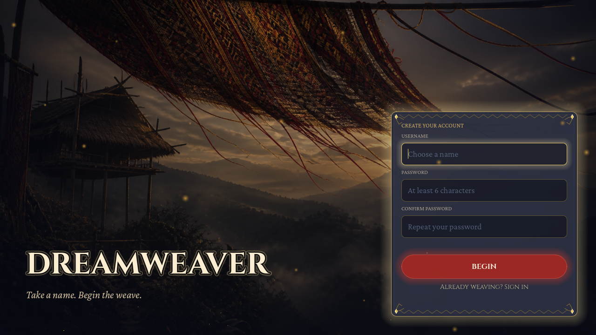
Input: The player completes sign-in with a valid account. Action: Lands on the Gateway after authentication.
Output: The Main Menu displays New Game, Load Game, Lore Codex, Settings, and Exit. From here the player begins a new playthrough or continues a saved run.
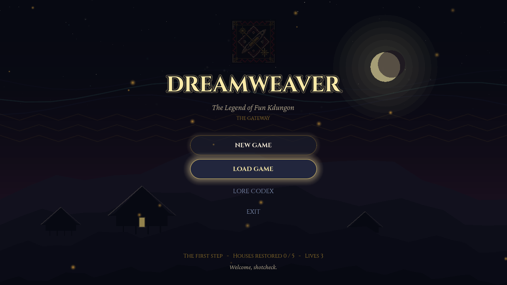
Input: The player selects New Game from the Gateway. Action: Advances through the prologue panels.
Output: The Story Intro presents the prologue narrative (“The Road Beyond”) with a progress track and a Skip option. Selecting Begin the journey continues into the tutorial.
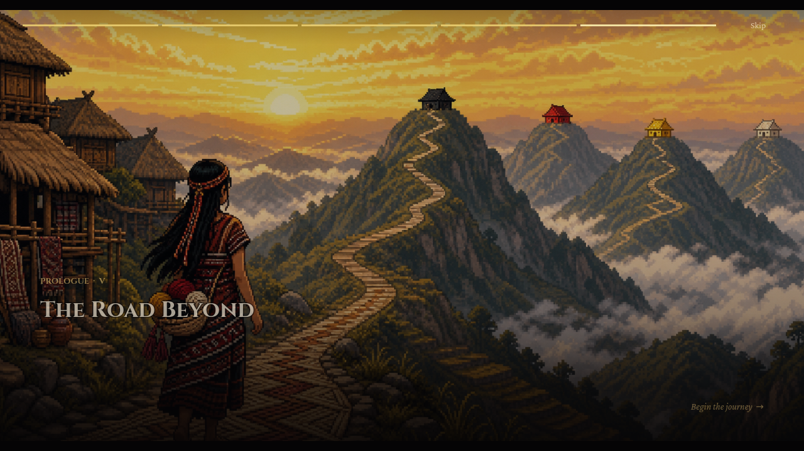
Input: The player finishes the prologue and enters the tutorial scene. Action: Moves S’lang and advances narrator dialogue with E.
Output: The tutorial room appears in a bleached grayscale state. The HUD shows lives and health, the objective reads “Wake in the bleached room,” and the dialogue box types narrator text with an E · continue prompt.
Input: The player completes the tutorial and receives the Lewet Staff. Action: Walks the boardwalk toward a House door and presses E to enter.
Output: The hub shows five labeled Houses (Black Foundation, Red Courage, Golden Sun, Dream Ancestors, Sacred Loom). The objective panel, health bars, essence slots, and interaction prompt are visible while the world remains desaturated.
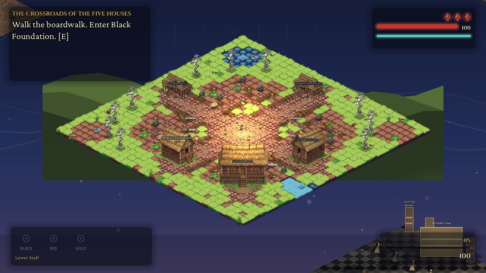
Input: The player enters Black Foundation from the hub. Action: Explores the cold hall to find the Spirit of the Fiber.
Output: The chapter interior loads with the House objective, HUD, and Lewet Staff essence indicators. Interactive props (loom, baskets, spirit) appear in the isometric room.
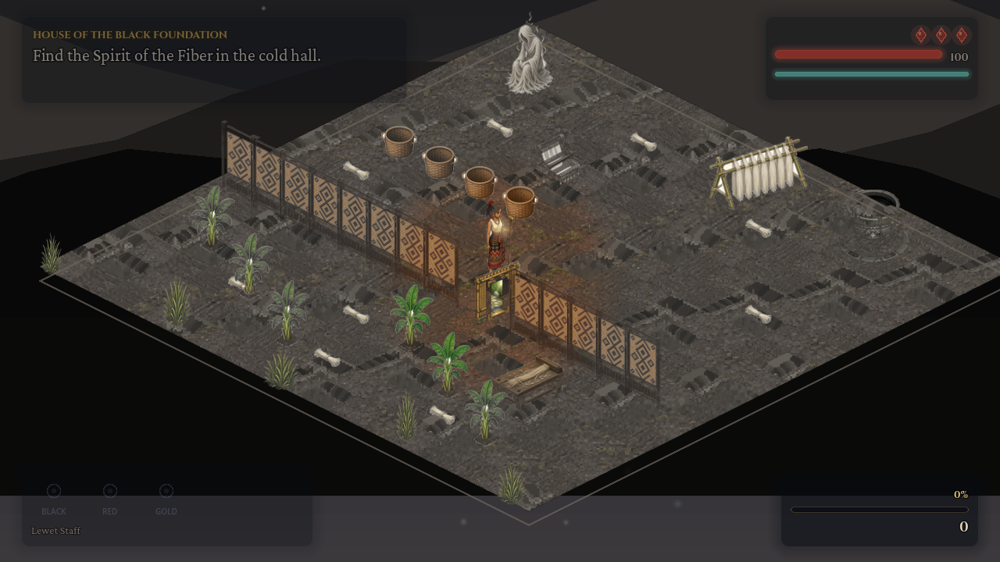
Input: The player approaches an NPC or story trigger inside a chapter or tutorial. Action: Presses E to continue each line.
Output: The woven dialogue panel appears with speaker label (e.g., NARRATOR), typewriter text, and an E · continue hint. Portrait wells light for active speakers when character dialogue is used.
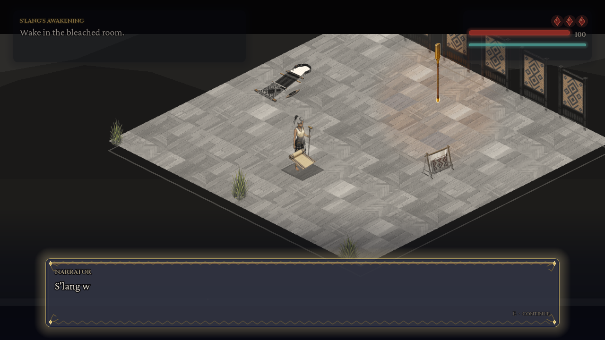
Input: The player reaches the Sacred Loom duel / boss encounter. Action: Dodges and answers the Shadow Weaver’s slam with staff strikes and chime (Space / Q).
Output: The Shadow Weaver performs a slam ability with a purple radial burst and rising shadow VFX, indicating an area attack during the real-time boss fight.
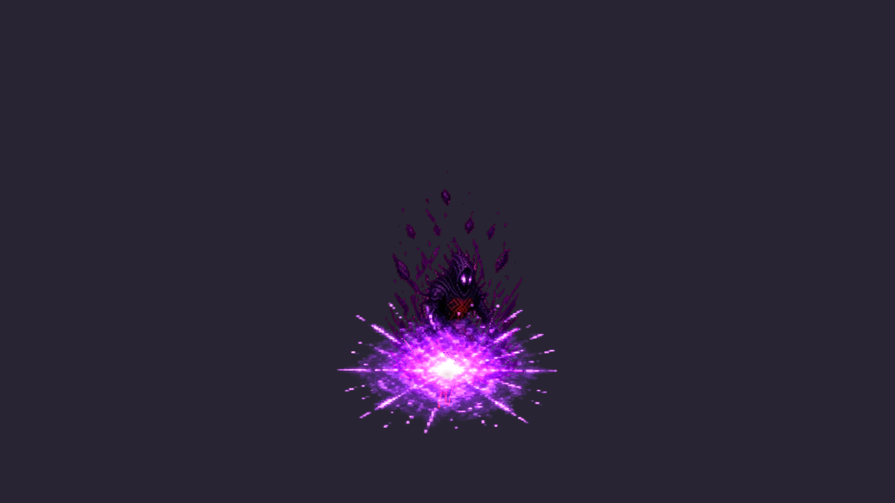
Input: The player engages shadow enemies on the ridge or during Chapter 5 waves. Action: Attacks with the Lewet Staff and uses the sonic chime.
Output: Shadow minions spawn and hunt S’lang using combat styles (chaser, stalker, dasher, caster). Defeated shadows award score and a small heal.
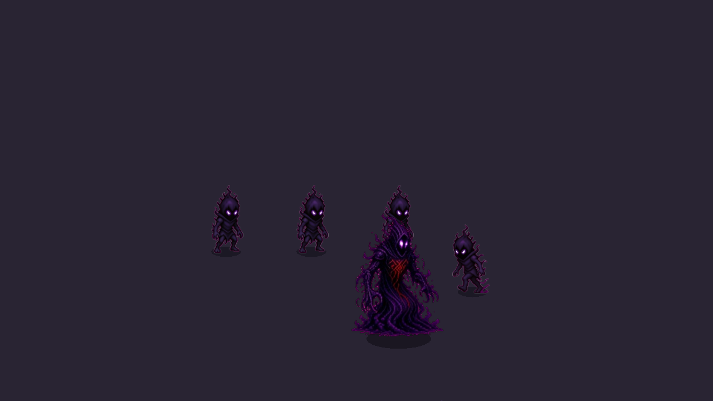
Input: The player restores the Houses and defeats the Shadow Weaver. Action: Triggers the Color Burst at the end of Chapter 5.
Output: The grayscale veil clears. The Crossroads returns to full colour, House labels show restored status, and the banner announces the world is whole again.
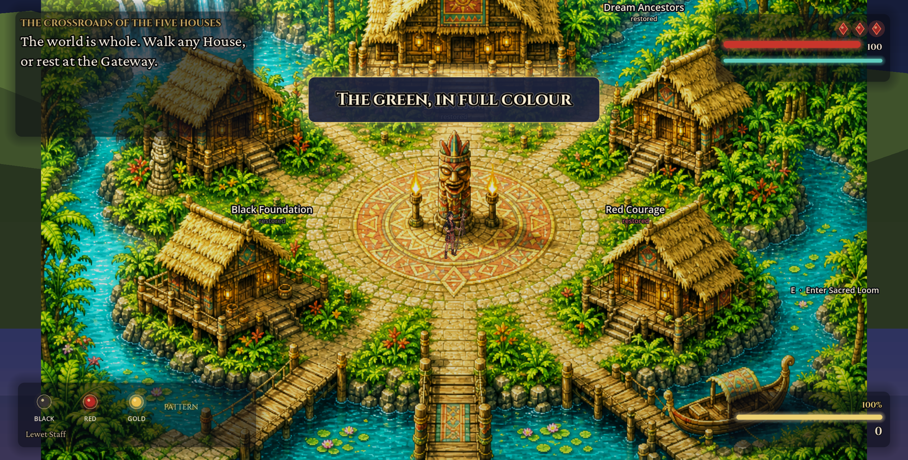
Input: The player completes the final Sacred Loom sequence. Action: Watches the closing sequence and ending screen.
Output: The Ending scene displays the final rank, score summary, and credits/return options after the world is restored.
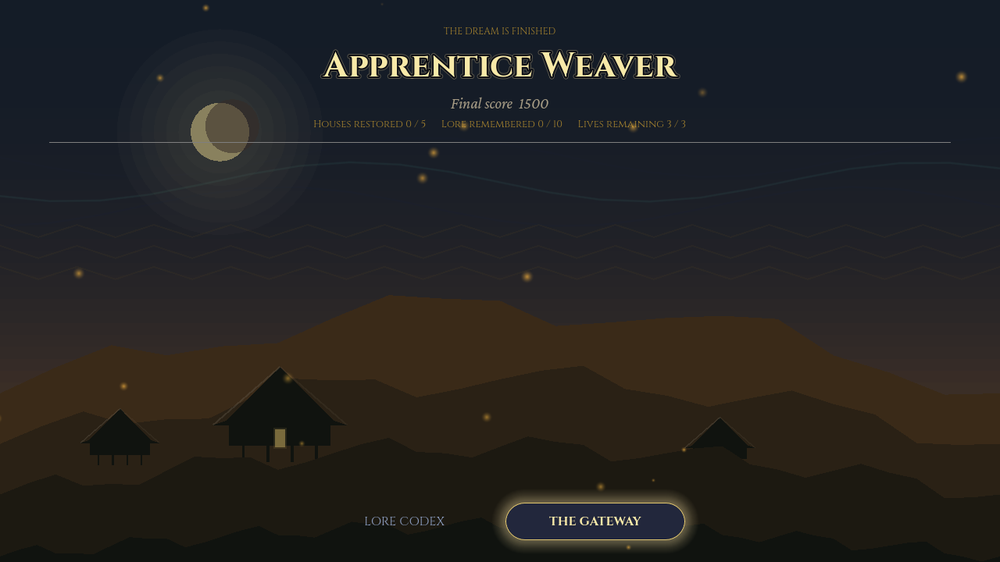
Tip for manuscript: Open this file in Microsoft Word → File → Save As → Word Document (.docx), then copy the sections you need into your thesis appendix.